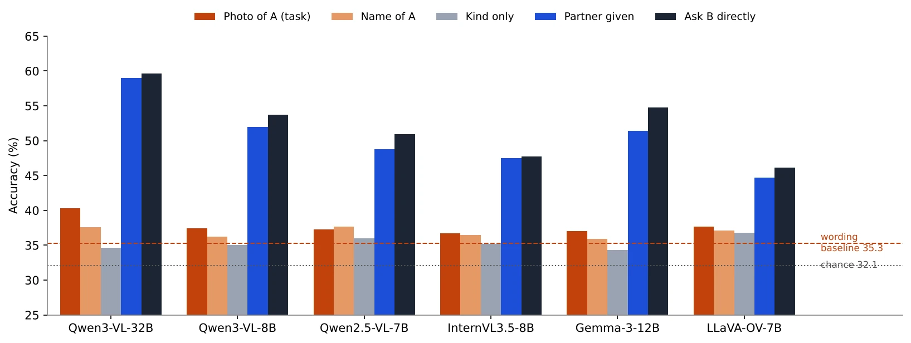
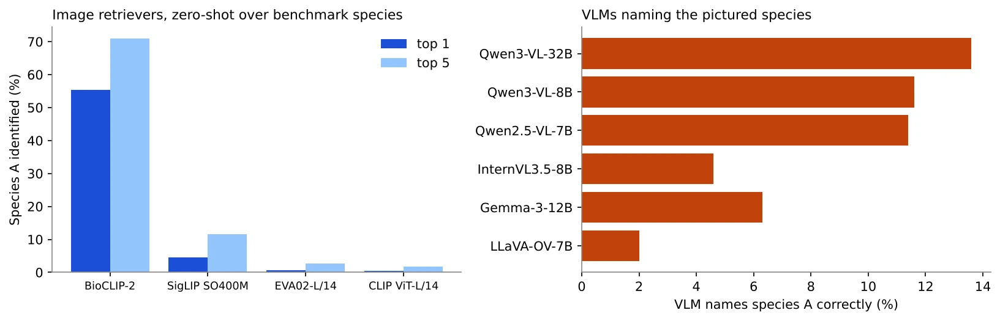
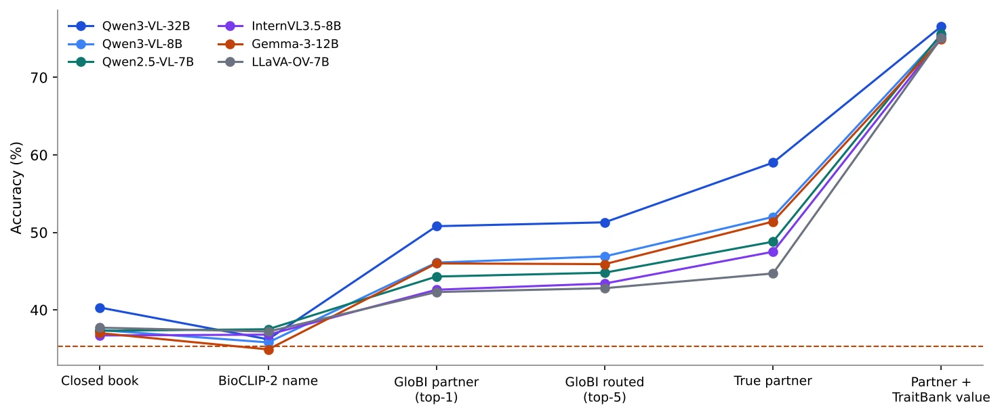
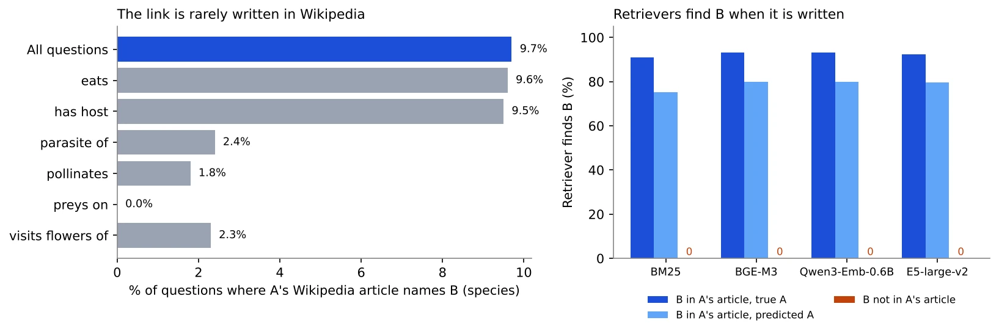
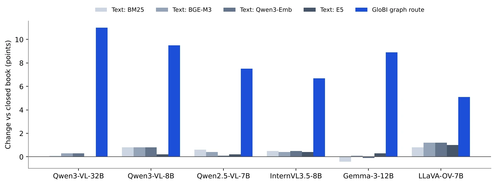
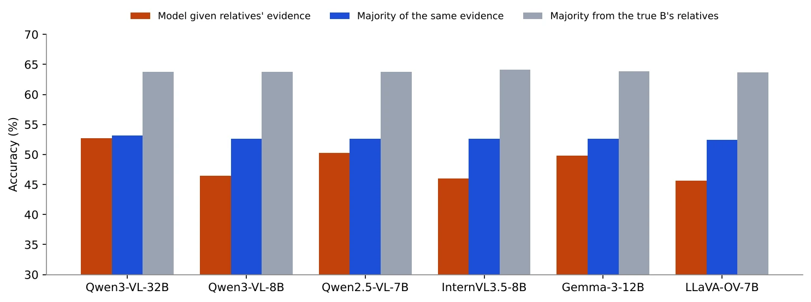
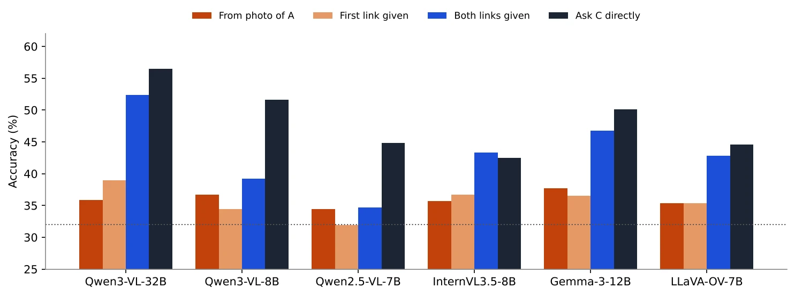
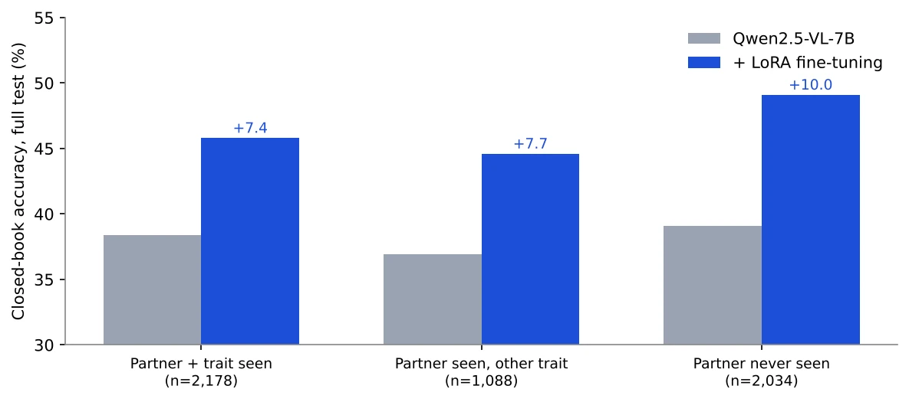
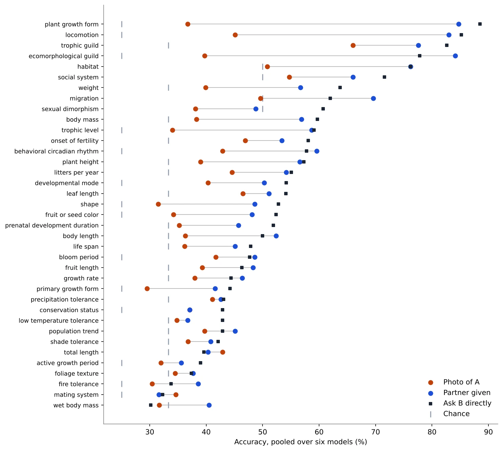

BioHop: Multi-Hop Knowledge-Based Visual Question Answering over Species Interactions and Traits
In preparation for the KDD 2027 Datasets and Benchmarks Track
BioHop shows a photo of one species and asks about a trait of its ecological partner, which is never shown and never named. Open VLMs answer barely above a wording baseline; supplying the partner closes 81 to 98% of the gap to the one-hop ceiling, so partner resolution is the bottleneck.
Knowledge-based VQA benchmarks such as E-VQA and InfoSeek ask about the entity in the image. In biology, much of what matters about an organism sits one hop away: what it eats, what hunts it, which plants it visits, and the traits of those partners.
Answering a BioHop question takes three steps: identify species A from the photo, follow a GloBI interaction to partner B, and read B's trait from TraitBank. Controlled forms of every question isolate each step, and each hop is checked against Wikipedia to see whether a text retriever could find the bridge at all.
How the knowledge graph is built
GBIF backbone keys are the hub. Wikidata maps each GBIF key to the EOL, NCBI and Open Tree of Life ids that GloBI and TraitBank use. The join yields one node per species with images and the paths that questions come from: species A interacts with species B, and B has a trait value.
- TreeOfLife-200M538,972 species, all with images
- GBIF backboneNames matched to accepted taxon keys, synonyms followed
- WikidataGBIF key to EOL, NCBI and Open Tree ids, plus the English Wikipedia article
- GloBI1,696,463 interaction edges among 113,545 species
- TraitBank1,107,365 trait values for 318,503 species, 58 predicates
Benchmark at a glance
| Graph | 538,972 species; 1,696,463 GloBI edges, 900,280 (53%) gold, matched by id or by two or more records; 1,107,365 TraitBank values |
|---|---|
| Interactions | Eats 655,847; preys on 464,496; has host 232,714; pollinates 166,661; visits flowers of 138,807; parasite of 37,938 |
| Two-hop | 19,547 questions over 9,314 pictured species and 37 traits; 11,666 train, 2,051 validation, 5,830 test; 13,043 gold and 6,504 silver |
| One-hop controls | 70,872 questions about A itself, over 36,402 species and 45 traits |
| Three-hop | 5,141 chains A to B to C over 755 species and 44 traits; 395 with photos evaluated |
| Models | Qwen3-VL-32B and 8B, Qwen2.5-VL-7B, InternVL3.5-8B, Gemma-3-12B, LLaVA-OneVision-7B, greedy decoding; a LoRA-tuned Qwen2.5-VL-7B |
Construction rules
A question is kept only when A has at most 10 recorded partners under the interaction, all of them share the trait value (the same range for numeric traits), and each partner's TraitBank records agree at least 80% of the time, so every answer is unanimous.
Answers are rebalanced within wording groups, which cut a question-only baseline from 50.7% to 35.3%. Splits are by pictured species A, so no test species appears in training.
Controlled forms give the model the photo of A (the task), only A's name, only A's kind (“an insect”), the photo plus the true partner B, or the one-hop question about B.
Partner resolution is the bottleneck
Closed-book accuracy is 36.7 to 40.3%, against a wording baseline of 35.3% and chance at 32.1%. Giving the model the true partner lifts every model, to 44.7 to 59.0%, closing 81 to 98% of the gap to asking about B directly.

| Model | Photo of A | Name of A | Kind only | Partner given | B by photo | B by name |
|---|---|---|---|---|---|---|
| Qwen3-VL-32B | 40.3 | 37.6 | 34.6 | 59.0 | 53.8 | 59.6 |
| Qwen3-VL-8B | 37.4 | 36.2 | 35.0 | 52.0 | 51.3 | 53.7 |
| Qwen2.5-VL-7B | 37.3 | 37.7 | 36.0 | 48.8 | 48.2 | 50.9 |
| Qwen2.5-VL-7B + LoRA | 45.5 | 41.3 | 38.4 | 58.5 | 60.1 | 59.8 |
| InternVL3.5-8B | 36.7 | 36.5 | 35.2 | 47.5 | 44.7 | 47.7 |
| Gemma-3-12B | 37.0 | 35.9 | 34.3 | 51.4 | 49.7 | 54.8 |
| LLaVA-OV-7B | 37.7 | 37.1 | 36.8 | 44.7 | 46.0 | 46.1 |
| Wording baseline | 35.3 | 35.3 | 35.3 | 35.3 | 35.3 | 35.3 |
| Chance | 32.1 | 32.1 | 32.1 | 32.1 | 32.1 | 32.1 |
Accuracy (%) by form on the diagnostic set of 3,993 test questions with one partner, both species extant and both with photos.
| Model | Photo of A | Kind only | One partner | Several partners |
|---|---|---|---|---|
| Qwen3-VL-32B | 40.6 | 34.7 | 40.2 | 43.4 |
| Qwen3-VL-8B | 38.6 | 36.4 | 38.2 | 41.3 |
| Qwen2.5-VL-7B | 38.4 | 35.8 | 38.3 | 39.0 |
| Qwen2.5-VL-7B + LoRA | 46.8 | 38.3 | 45.8 | 53.7 |
| InternVL3.5-8B | 37.1 | 35.7 | 36.8 | 39.1 |
| Gemma-3-12B | 38.2 | 34.7 | 37.8 | 41.2 |
| LLaVA-OV-7B | 37.5 | 36.1 | 37.5 | 37.6 |
| Wording baseline | 36.5 | 36.5 | 36.5 | 36.5 |
| Chance | 31.7 | 31.7 | 31.7 | 31.7 |
Closed-book accuracy (%) on the full two-hop test split: 5,300 questions with a photo, 4,692 with one partner and 739 with several.
Where the chain breaks
- VLMs cannot name the species. They name species A correctly 2.0 to 13.6% of the time and its genus 6.3 to 29.9%. BioCLIP-2 retrieves A zero-shot at 55.4% top 1 and 70.9% top 5; general CLIP-style retrievers stay below 12%.
- The graph route works where names do not. Handing the model BioCLIP-2's name for A does not help, but following GloBI from BioCLIP-2's predictions reaches the true partner 56.2% of the time from the top 1 and 60.1% routed over the top 5, raising accuracy to 42.8 to 51.3%. With the partner's TraitBank value, models reach 74.9 to 76.6%.
- Text does not carry the link. A's Wikipedia article names B for 9.7% of questions, and for none of the preys-on edges. Three retrieved passages move accuracy by at most 1.2 points, while the GloBI route adds 5.1 to 11.0. When the article does name B, retrievers find it 91 to 93% of the time.
- Relatives fill some gaps. With B's own record removed, the majority of evidence from B's genus or family is right 52.4 to 53.4% of the time, and 63.7 to 64.1% when taken from the true B's relatives.
- Three hops stay hard. On 395 chains, accuracy from the photo is 34.4 to 37.7% for the base models. Giving both links lifts Qwen3-VL-32B to 52.4%.
- Training helps, most on unseen partners. LoRA (rank 16, one epoch, 16,000 questions) lifts Qwen2.5-VL-7B from 38.4 to 46.8% on the full test split. The gain is largest, +10.0 points, for partners never seen in training, so it is not memorization of partners.








Robustness checks
- Restricted to questions where the model named A correctly, accuracy from the photo rises (31.6 to 54.4%) but stays well below the partner-given form (35.4 to 64.7%).
- On 52 questions where A's scientific name contains B's genus, accuracy from A's name rises by 6 to 23 points, so these leaks are tracked separately.
- Gold and silver questions give similar accuracy once gold is reweighted to silver's trait mix.
Related work
CLADE: Category-Level Answering from Deficient Evidence in Retrieval-Augmented Language Models
arXiv preprint, 2026. Under review at the AAAI 2027 NeuSymBridge WorkshopLABEL: Literature Asymmetry between Efficacy and Limits in Drug Knowledge and Language Models
arXiv preprint, 2026. Under review at the AAAI 2027 Workshop on Health Intelligence (W3PHIAI)How Finely Can Vision-Language Models See Biology? Bio-VQA: A Benchmark for Taxonomic, Morphological, Spatial and Individual Reasoning
IEEE/CVF Winter Conference on Applications of Computer Vision (WACV 2027)